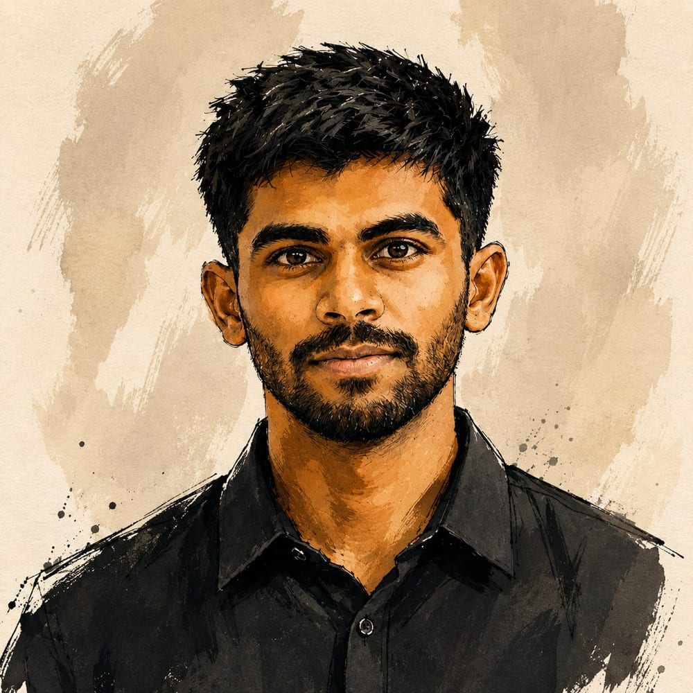
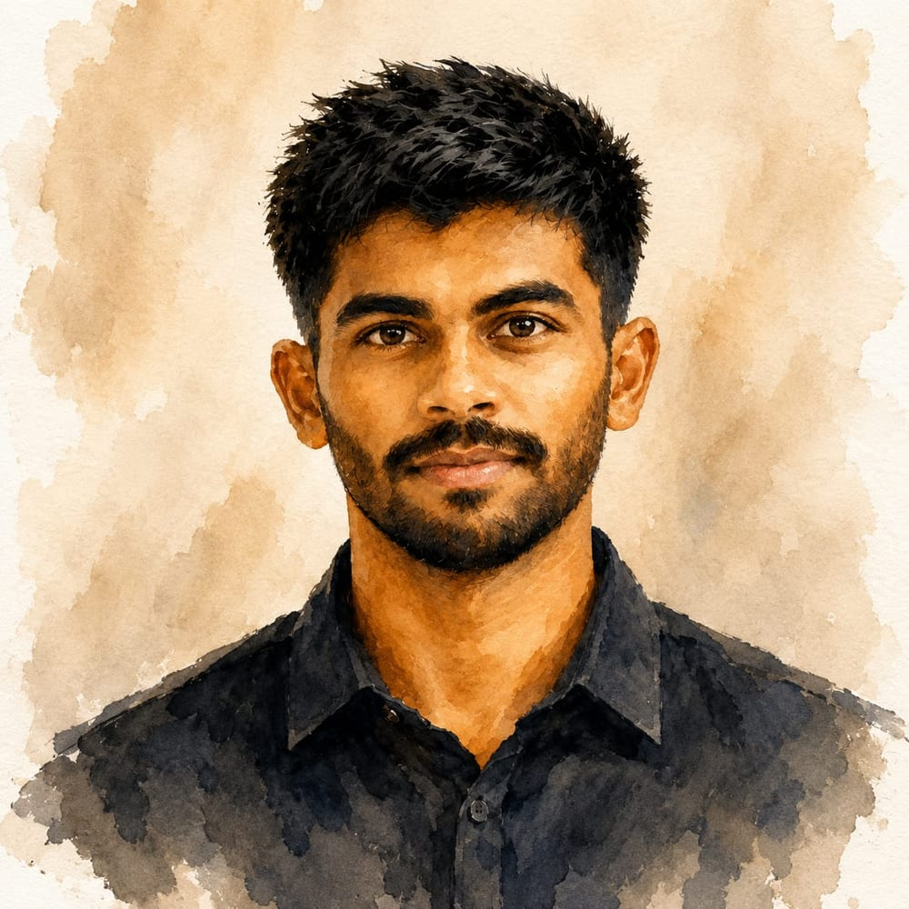
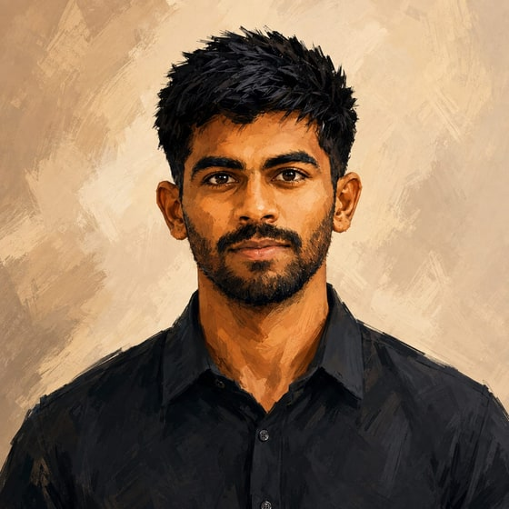

Hi, I’m
Thribhuvan
{{ typed }}


Last Played
On repeat while I work
Mozart, mostly
{{ win.label }}
Full-stack engineer · Bengaluru
I ship whole products — and send fixes back into the frameworks they run on.
I'm Thribhuvan. I design, build and operate full-stack systems end to end: multi-tenant SaaS with row-level tenant isolation, verified payment flows, authentication, and AI-assisted workflows that keep a human in the loop.
When a dependency breaks in production, I read its source and fix it there. That has become {{ ossCount }} merged pull requests across {{ ossRepoCount }} upstream repositories — Svelte, Prisma, SvelteKit, SolidJS, Nitro and Supabase among them. Small, specific diffs against real bugs.
Away from the editor I read Vedanta, and I work to Mozart and the classical canon. Both reward attention over speed — the same instinct that makes me read a library’s source instead of guessing at it.
{{ ossCount }}Merged upstream PRs
{{ ossRepoCount }}Open-source repositories
4Products shipped publicly
TypeScript
React / Next.js
Node.js
PostgreSQL + RLS
Supabase
Python
Docker

{{ folderTitle }}
About Me
I build things end to end, then fix what breaks underneath them.
I'm Thribhuvan, a final-year computer science student in Bengaluru who spends most of his time shipping. A multi-tenant ordering platform with real payments. An agent pipeline with human review gates. A vision service that runs on CPU alone. Things with users, edge cases and consequences.
When a library breaks inside one of those builds, I read its source rather than work around it. That habit has turned into {{ ossCount }} merged pull requests across {{ ossRepoCount }} upstream repositories, among them Svelte, Prisma, SvelteKit, SolidJS, Nitro and Supabase.
Based inBengaluru, India
StudyingB.Tech CSE · JNTUA
Graduating2026 · CGPA 8.0
Shipped4 public products
What I reach for
TypeScript
React / Next.js
Node.js
PostgreSQL + RLS
Supabase
Python
Docker
System design
Away from the editor
I read Vedanta. It trained me to sit with a hard idea until it resolves, rather than reaching for the first answer that looks right — which is most of what debugging actually is.
Mozart is usually playing. Structure without words. It is the only thing I have found that holds attention steady through a long refactor.
I photograph where I travel. Temple architecture in Tamil Nadu, the hill roads through the Western Ghats. The Photos folder is what I actually saw, not a portfolio.
Reach me
Open Source
Fixes I sent back to the tools I build on.
Most started as a bug that cost me an afternoon in my own work. I read the source, found the cause, and sent the smallest diff that fixed it. No drive-by commits.
Merged upstream
Svelte · Prisma · Supabase
Compilers · runtimes · client libraries
Thribhuvan P
Full-stack engineer
Bengaluru, India · thribhuvan003@gmail.com · github.com/thribhuvan003 · linkedin.com/in/thribhuvan003
Open Source Contributions
{{ grp.repo }}
{{ grp.prs }}
{{ grp.note }}
Projects
- {{ b.text }}
Stack: {{ p.stack }}
Skills
{{ g.label }}
{{ g.names }}
Education
{{ e.org }}
{{ e.when }}
{{ e.title }} · CGPA 8.0/10.0
Workspace
{{ folderTitle }}
{{ folderCount }}
Education & Experience
Where I’ve studied, what I’ve shipped, and what I build with.
Education
{{ e.title }}
{{ e.when }}
{{ e.org }}
- {{ n.text }}
Education details not added yet.
Open Source
{{ x.title }}
{{ x.when }}
{{ x.org }}
- {{ n.text }}
Details available on request.
Current focus
{{ l.title }}
{{ l.note }}
Tools & Tech
{{ g.label }}
-
Photos
Gallery
Temples, hills, and things I’ve saved. Shot on a phone, mostly around South India.
No photos yet
This folder is intentionally empty. Images will land here later.
Music
What’s usually playing while I work.
Mostly classical — Mozart, and whatever else keeps focus without lyrics.
Open my SpotifyContact
Have something thoughtful to build or fix?
Email is the clearest way to reach me. GitHub and LinkedIn are here for more context.